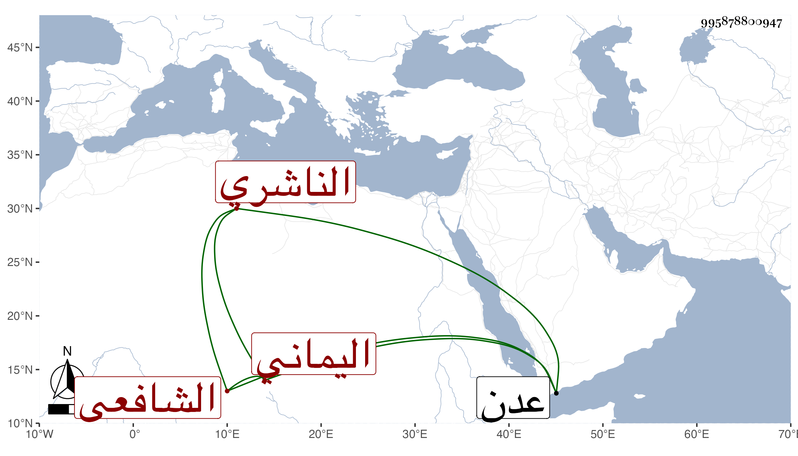

0902Sakhawi.DawLamic.ITO20230111-ara1.EIS1600.995878800947
Biography ID: 995878800947
83
عبد الله بن عبد الرحمن بن محمد بن عبد الله بن عمر بن أبي بكر بن عمر بن عبد الرحمن بن عبد الله أبو محمد الناشري اليماني الشافعي . ولد في شعبان سنة ثلاث وعشرين وثمانمائة وأخذ عن ابني عمه البرهان إبراهيم وأحمد ابني أبي القسم في الفقه بل قرأ على أولهما الشفا والوسيط وعنه أخذ العربية وكذا أخذ الفقه عن عبد الله بن محمد المقري وسمع من عمه الموفق الناشري وغيره وقرأ الفرائض والحساب على الفقيه عبد الله بن أبي القسم الأكسع والموفق علي بن عمران في آخرين وناب في مشيخة الفرائض بالظاهرية عن ابن عمه حافظ الدين عبد المجيد بن علي الناشري وفي مشيخة القراء بالأشرفية عن بعض أهله بل ولي القضاء بالأعمال اللحجية ونظر مسجد الحنفية بعدن ذكره العفيف الناشري ولم يؤرخ وفاته .
